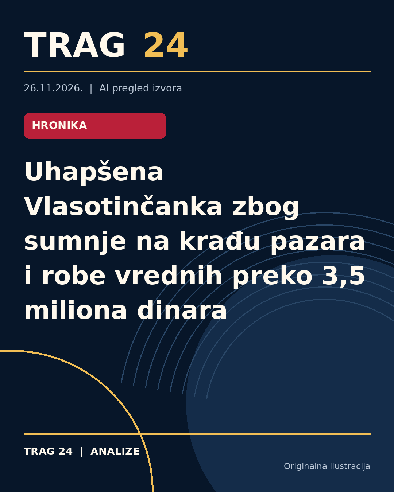

Uhapšena Vlasotinčanka zbog sumnje na krađu pazara i robe vrednih preko 3,5 miliona dinara

ŠTA SE DOGODILO
Policija u Nišu je uhapsila 41-godišnju ženu iz okoline Vlasotinca, označenu inicijalima S. N., zbog sumnje da je duže od dve godine prisvajala robu i dnevne pazare iz maloprodajnog objekta u kojem je bila odgovorno lice. Protivpravna imovinska korist procenjena je na više od 3,5 miliona dinara.
HRONOLOGIJA
Prema informacijama ministarstva unutrašnjih poslova, S. N. je od 1. januara 2024. godine do 12. februara 2026. godine navodno prisvajala robu i novac. Hapšenje je deo šire dvodnevne akcije sprovedene 24. i 25. novembra na teritorijama Beograda, Novog Sada, Kraljeva i Niša, u okviru koje je ukupno uhapšeno šest osoba, dok se za jednom osobom intenzivno traga.
ŠTA NAVODE IZVORI
Iz Ministarstva unutrašnjih poslova navode da osumnjičena ženska osoba uništavanjem poverenja pribavila protivpravnu imovinsku korist i oštetila privredno društvo za iznos od 3.553.742,90 dinara. Takođe, u sklopu iste akcije, drugi uhapšeni osumnjičeni su za krivična dela protiv privrede i službene dužnosti sa ukupnom štetom za pravna lica i državni budžet višom od 37,6 miliona dinara. S. N. je određeno zadržavanje do 48 sati nakon čega će biti privedena nadležnim tužilaštvima.
ŠTA JE POTVRĐENO
Potvrđeno je da je uhapšena žena osumnjičena za krađu i proneveru imovine i novca iz maloprodajnog objekta. Hapšenje je deo veće policijske akcije u više gradova Srbije. Takođe, poznato je da postoji još osumnjičenih u vezi sa sličnim krivičnim delima i da istraga i dalje traje.
ŠTA NIJE POTVRĐENO
Nisu potvrđene detaljnije okolnosti koje bi precizirale na koji način je žena pribavljala imovinsku korist, niti su dostupne informacije o eventualnim izjavama osumnjičene ili odbrani. Nema podataka o sudskom epilogu ili o tome da li je protiv nje podignuta optužnica do sada.
ŠTA OSTАJE OTVORENO: Ostaje da se prati dalje postupanje tužilaštva, ishod istrage i eventualni pravni koraci. Takođe, nije poznato da li se u okviru proširenog slučaja hapšenja otkrivaju novi detalji ili veća umreženost osumnjičenih.
Izvori
- https://www.blic.rs/vesti/hronika/uhapsena-vlasotincanka-zbog-kradje-pazara-i-robe-vrednosti-vise-od-35-miliona-dinara/5kp1vs4
- https://www.juznevesti.com/hronika/uhapsena-vlasotincanka-zbog-kradje-pazara-i-robe-vrednosti-vise-od-35-miliona-dinara/
Ova analiza je pripremljena uz pomoć veštačke inteligencije na osnovu javno dostupnih izvora. Navodi izvora nisu nužno nezavisno potvrđeni.